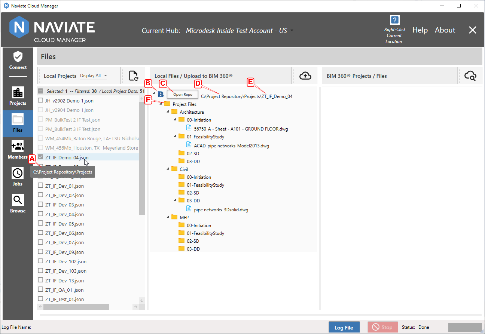
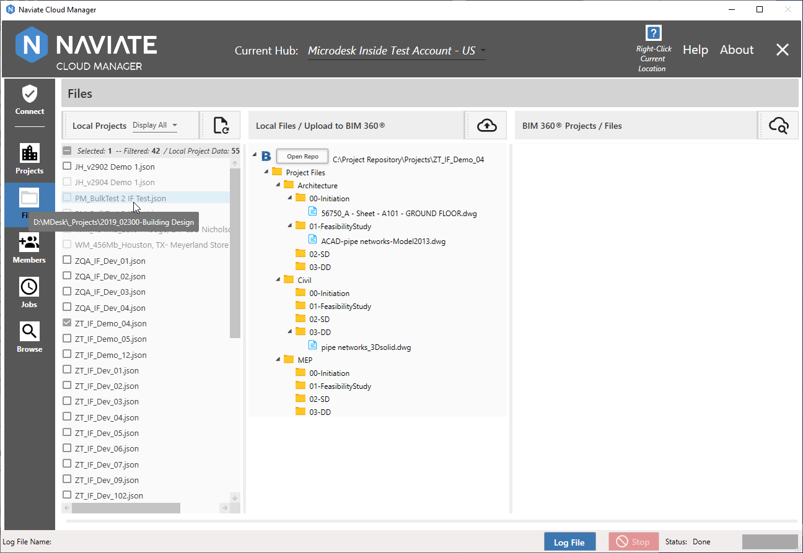
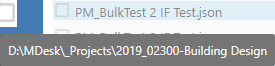
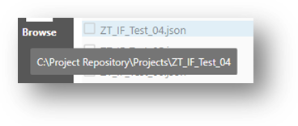
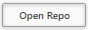
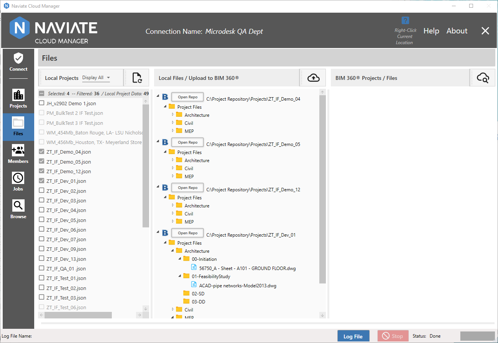
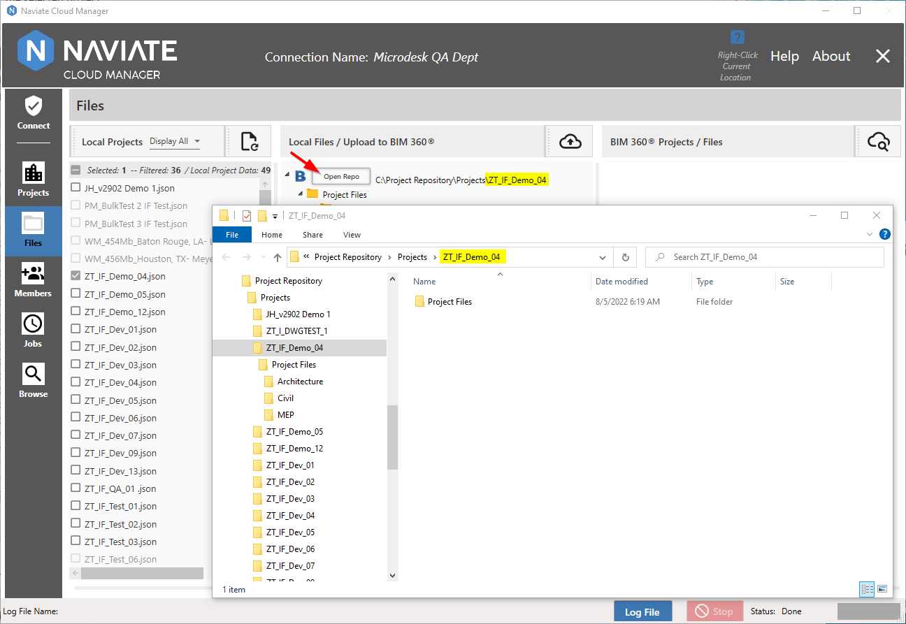

Locate Project Files
When projects are added to the Naviate Cloud Manager database they are assigned a File Path local folder location. This location is added/updated in one of two ways:
- By adding the project from Naviate Cloud Manager using the project template process, described in Enter the Spreadsheet Data, above.
- By updating the local project database using the Add Existing Projects to Database process described in Browse Projects (below).
Please Note — This process not only adds new projects to the database — i.e., those that pre-existed Naviate Cloud Manager or were not added to BIM 360® using Naviate Cloud Manager— but can also be used to update existing projects with a different File Path location.
Files are recognized as “locatable” by the Local Files browser when the Local Folder setting for the project points to a directory location having a sub-directory containing the project’s name. All files to be uploaded for the project are stored in sub-directories using the project-named folder as the top-level root.

In the screen above, the current project local file folder path A is displayed in the tool-tip when the cursor pauses over a project. Please note this is available for all projects, including those without a locatable path. The Project Type icon B indicates whether the project to be uploaded is a BIM 360 or ACC project. Label C indicates the embedded local repository project navigation feature, which is discussed below.
In the above example, since the selected and checked project was set to “C:\Project Repository\Projects” A, all contents found there are displayed in the center Local Files / Upload to BIM360 column. At the top of the Local Files display for the project it also displays the location D of the assigned local repository and the project-specific sub-directory E containing the actual folders and files displayed.
Important — As of Naviate Cloud Manager Release v2.9.0.2 it is mandatory for the first-level folder path to always be included in the local file folder path F. (Previously it could be excluded and a Program Files upload level was assumed and inserted automatically at the time of upload.) The first-level folder path must be named Project Files and/or Plans— or, if either or both have been renamed on BIM 360®, then these folder(s) must equal those names. If not, the application will produce an error when attempting to upload.
As mentioned above, the local file folder path assigned to the project path always displays in the project tool-tip.

This is useful when troubleshooting issues with files not being available for upload.
Common causes for files not being found by projects for upload are as follows:
- Pointing to a local file repository but there has not yet been an entry made for the project.
- There has been an entry made for the project, but the Project Files sub folder does not exist.
- A local Project Files sub folder exists, but Project Files on BIM 360® has been renamed.
- An inaccurate repository location or pointing to an unavailable drive:

- Erroneously including the project name in the file repository location path:

Local Repository Project Navigation
When working in the Files module, it is often necessary to add new folders, change folder names, copy files, etc., using the MS Windows File Explorer. Naviate Cloud Manager provides assistance for performing these common tasks via the Open Repo  button.

An Open Repo button is provided for each project selected. Pressing this button opens a new MS Windows File Explorer window that is automatically located in the local file repository for the selected project.

As shown above, this makes it easy to quickly access the precise location necessary to perform routine maintenance in the local repository on a per-project basis.